This section is split into 5 parts, one for each lane. It will cover 1 champion that is good to learn the game with for each lane. This guide will cover what each ability does, items to build and some basic combos.
Top Lane
Garen

Garen's abilities
Passive : Perseverance
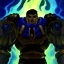Garen regenerates a small portion of his max hp every 5s, Garen loses Perseverance if he takes damage from a champion, turret or epic monster.
Q : Decisive Strike
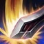Garen cleanses himself of all slows and gains 30% bonus movement speed for a few seconds. Additionally garens next basic attack does bonus physical damage and silences the targer for 1.5s.
W : Courage
Passive: garen premanently gains 0.25 bonus armor and magic resiste every time he kills an enemy, up to a max of 30.
Active: Garen reduces incoming damage by 30% and gains a shield for a few seconds.
E : Judgement

Garen rapidly spins in place for a few seconds dealing damage to all enemies around him and shredding the enemies armour, he cannot basic attack during this duration.
R : Demacian Justice
Garen send down a giant sword from the sky to do a massive amount of true damage scaling with the targers missing health.
First: Q-E-W-R | Max Order: R-E-Q-W
Basic combo
Q - AA - E - R
Runes and Builds
This is the standard runepage for Garen, you can run this pretty much every game and it will be good. There are some variations but i dont want to make this guide any more complicated. Switch between Armour and MR for the quints depending on what champion youre against. For summoner spells you can go Flash and Teleport.

Items
When playing Garen there are a variaty of Items you can build. In this section i will only cover one sample build.
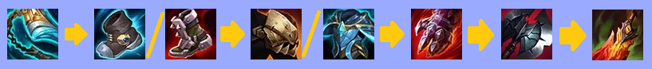Stridebreaker is a great first item as Garens primary weakness is his lack of mobility, using the active combined with his Q makes it easyer to get on top of targets. For boots you can chose between mercs and steelcaps depending on what the enemy team composition is, if they are heavy AD go steelcaps if they are heavy AP/CC go mercs, same goes for the next item, Dead Mans Plate and Force of Nature both give movement speed which is a great stat for Garen, build whichever fits more. If the enemy team has an even amount of AP and AD you can build both. Steraks Gage is another great item as the shield along with the AD is good for Garen. Black Cleaver adds even more armour shred to your kit and Deaths Dance is a great last item overall as it gives you even more survivability.
Jungle
Warwick

Warwick's abilities
Passive : Eternal Hunger
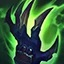Warwick heals for a percentage of the damage he deals. Healing increases the lower HP he has.
Q : Jaws of the Beast
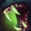Warwick lunges at a targer biting them and healing himself for a portion of the damage dealt. If you hold the button instead Warwick lunges through them doing the same damage and healing.
W : Blood Hunt
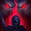Passive: Warwick has increased movement speed while running towards low HP enemy champions. He also has bonus attack speed towards low HP enemies.
Active: Warwick gains his movement speed bonus towards the nearest enemy champion regardless of their HP.
E : Primal Howl
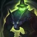Active: Warwick takes less damage for 2.5s.
Recast: After at least 1s warwick cancells his damage reduction and fears all enemies nearby, causing them to run away.
R : Infinite Duress
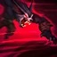Warwick leaps a medium distance and stuns the first enemy he hits dealing damage to them and healing from it.
First: Q-W-E-R | Max: R-W-Q-E
Basic combo
W-R-E-Q-E
Runes and Builds
This is the standard runepage for Warwick, you can run this pretty much every game and it will be good. There are some variations but i dont want to make this guide any more complicated. Switch between Armour and MR for the quints depending on what champion youre against. For summoner spells run Flash and Smite.

Items
Warwick has a pretty standard build. He usually builds the same first few items and then choses the rest based on the enemy teams damage types.
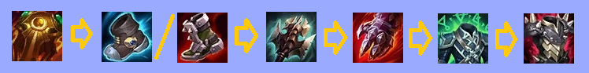Sunfire Aegis is an excellent item right now and since warwick can buid it effectivly you should start this every game. Boots are a standard choice of Mercs or Steelguards depending on the enemy team. Titanic hydra works very well with your kit as the extra attackspeed from your W lets it proc a lot more. Steraks Gage is a great item and gives you some extra survivability. For the last two items build whichever one the enemy team has more damage for first then the other one after.
Mid Lane
Annie

Annie's abilities
Passive : Pyromania
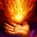Whenever annie casts an ability she gains a stack of Pyromania, when she has 4 stacks her next damaging ability will stun any targets hit and consume the stacks.
Q : Disintegrate
Annie throws a fireball at a targer enemy. If she kills the target half the cooldown and all the mana is refunded.
W : Incinerate

Annie shoots out fire in a cone dealing damage to all enemies in the area.
E : Molten Shield
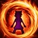Annie grans herself or a target ally a shield and extra movement speed for a few seconds.
R : Summon: Tibbers
Annie summons her bear to fight for her at a targer location, dealing significant damage where the bear lands. Tibbers will then attack nearby enemies. Annie can chose where Tibbers goes or who he attacks by pressing R on the target after cast.
First: Q-W-E-R | Max : R-Q-W-E
Basic combo
E-R-W-Q
Runes and Builds
This is the standard runepage for Annie, you can run this pretty much every game and it will be good. There are some variations but i dont want to make this guide any more complicated. Switch between Armour and MR for the quints depending on what champion youre against. For summoner spells run Flash and Ignite.

Items
Annie builds Items that will let her one shot enemy squishies as fast as possible.
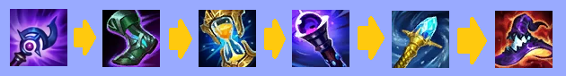You should build Ludens first most games as it gives the most damage. Sorcerers shoes are a staple on practically every mage as they give you more damage. Zhonyas Hourglass is one of the strongest items in the game as it lets you survive an extra few seconds which is very valuable. Void Staff gives 40% magic penetration so its good even against a team of squishies but if theres tanks its even more effective. Rylais is good on annie as it causes the aura tibbers has to constantly slow enemies allowing you to get an extra ability off before they can run. Deathcap is the best last item for all mages as it gives 40% bonus AP which is more effincient later game.
Bot Lane
Tristana
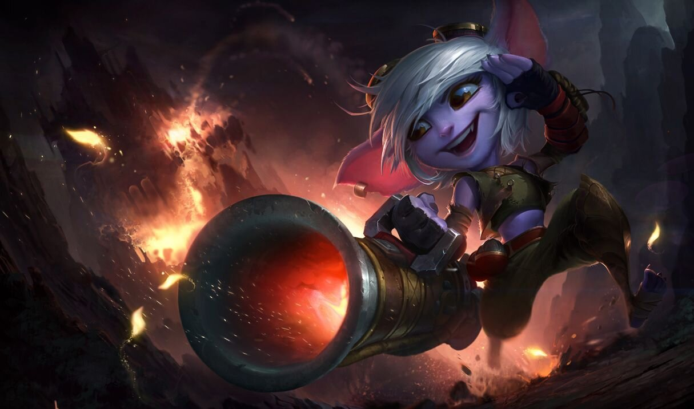
Tristana's abilities
Passive : Draw a Bead
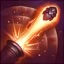Tristanas range increases with level.
Q : Rapid Fire
Tristana gains bonus attack speed for 7s.
W : Rocket Jump
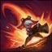Tristana leaps in a direction and slows enemies around where she lands. Her W cooldown is refunded whenever she gets a kill or assist.
E : Explosive Charge
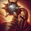Passive: Whenever tristana kills an enemy they explode dealing a small amount of magic damage to all surrounding targets.
Active: Tristana places a bomb on an enemy that blows up after 4s. Every time she auto attacks them up to a max of 4 times it increases the bombs damage.
R : Buster Shot
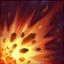Tristana shoots a massive cannonball at an enemy dealing damage and knocking them back.
First: E-W-Q-R | Max : R-E-Q-W
Basic combo
W-E-Q-AA-R
Runes and Builds
This is the standard runepage for Tristana, you can run this pretty much every game and it will be good. There are some variations but i dont want to make this guide any more complicated. Switch between Armour and MR for the quints depending on what champion youre against. For summoner spells run Flash and Heal.

Items
Tristana wants to kill enemies fast so that she can reset her W and keep jumping around. Thats why she builds damage and attack speed.
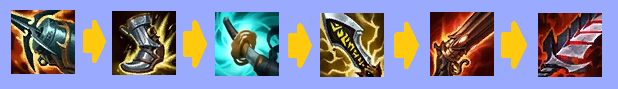You should build Kraken Slayer first as you want to auto fast to stack up your E bomb so the extra damage is good. Berserkers Greaves are a staple for all ADC's. The Stormrazor slow will let you get off an extra auto attack as well as the extra damage being good. Infinity Edge third item as it gives the most DPS and is madatory in most Crit builds. Rapidfire Cannon gives you extra range which is good late game as your passive gives you range also. Bloodthirster last item is my favourite as it gives you lifesteal to let you survive fights as well as heal to full right after them.
Support
Morgana

Morgana's abilities
Passive : Siphon Soul
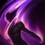Morgana heals for a portion of the damage her abilities do to champions and epic monsters.
Q : Dark Binding
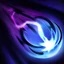Morgana throws a large projectile forward it roots the first champion it hits for a long time.
W : Tormented Shadow
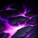Morgana corrupts the ground in a targer area, enemies on that area take damage over time.
E : Black Shield
Morgana shields targer ally or herself. The shield stops and stuns as well as giving a small magic shield.
R : Soul Shackles
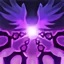Morgana latches chains onto nearby enemy champions that slow, after 3s if the enemies are still in range they are rooted.
First: Q-W-E-R | Max : R-Q-W-E
Basic combo
Q-W-R
Runes and Builds
This is the standard runepage for Morgana, you can run this pretty much every game and it will be good. There are some variations but i dont want to make this guide any more complicated. Switch between Armour and MR for the quints depending on what champion youre against. For summoner spells run Flash and Ignite.

Items
morgana doest provide any healing and isnt tanky so she builds mainly damage with a little bit of utility
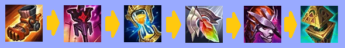You should build Boots of Mobility first as they will allow you to play a lot more aggressive in lane as well as let you roam to other lanes. You go Imperial Mandate first as it provides a lot of damage and synergizes with your kit. Zhonyas is also a must have item on morgana as it allows her to R then zhonyas which will guarantee the stun to hit them as they cant kill you before hand and when you come out of stasis they are stunned. You go redempion third as it gives you more utility which you lack. Demonic Embrace is a strong item as it gives you more burn as well as some resistances. Vigilant Wardstone is a must buy on supports as it lets you have more vision which is very important.